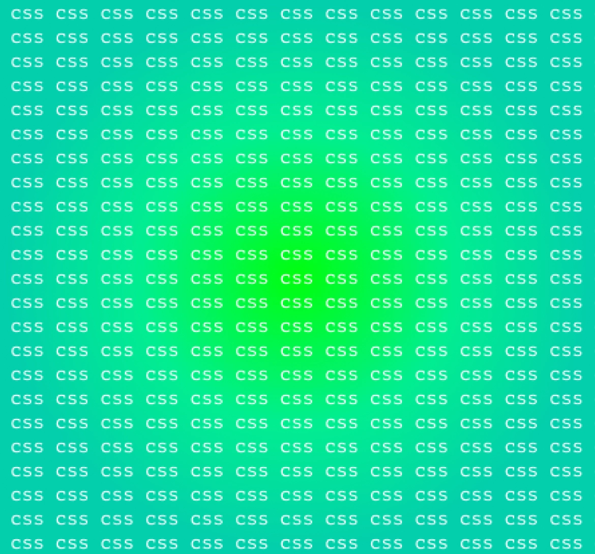
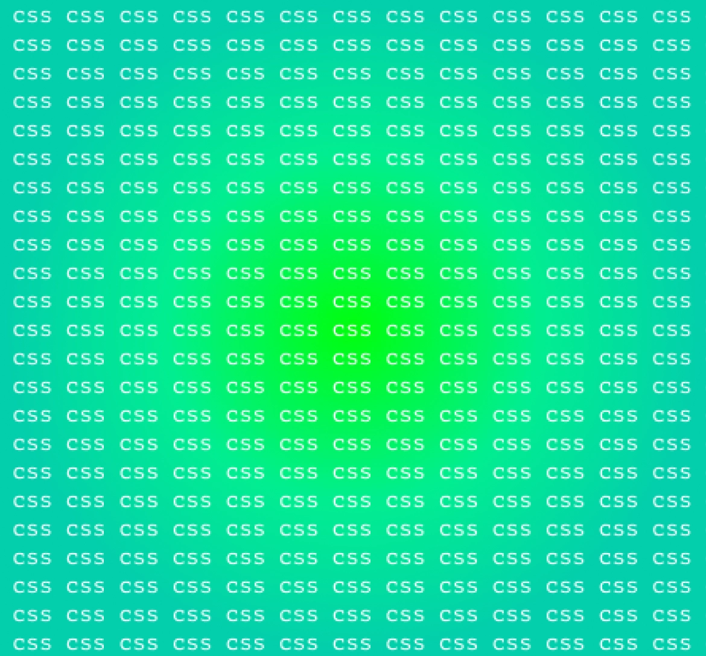

Миксины и Функции в SCSS

код

css
Удод Константин
Студент 2 курса, веб-разработчик

Авторская статья
Сегодня мы продолжим обучаться работе с препроцессорами, а именно разберем работу миксинов и функций. Данные два элемента также упростят вам жизнь при написании стилей кода. Они оба позволяют уменьшить количество работы разработчика на порядок.
Миксины
Начнем. Если вы, когда писали код для стилей и задумывались, можно ли его как-то переиспользовать, то да, можно. Миксины позволяют вам однажды написать несколько свойств в один селектор, а потом просто включать эту конструкцию туда, куда вам нужно, при этом прописав лишь include и название миксина.
Разберем на конкретных примерах. Бывает, что вам нужно центрировать какой-то элемент в блоке, используя известные свойства: flex, justify-content и align-items. Так вот, чтобы это все не прописывать по несколько раз вы можете сделать следующее:
@mixin center {
display: flex;
justify-content: center;
align-items: center;
}
div {
@include center;
}Мы создали миксин с название center и применили его для контейнера, внутри дива все три свойства при конвертации scss в обычный css появятся.
Миксины также возможно включать друг в друга, что позволяет на основе имеющегося миксина делать новый:
@mixin flex-between {
display: flex;
justify-content: space-between;
}
@mixin reset {
margin: 0;
padding: 0;
}
@mixin horizontal-menu {
@include reset;
@include flex-between;
list-style: none;
.menu-item {
margin: 0 10px;
}
}
.menu {
&.horizontal-menu {
@include horizontal-menu;
}
}Обратите внимание, что внутри миксина horizontal-menu мы подключили два вышестоящих миксина и потом использовали его для стилизации нашего меню. Все стили из миксинов flex-between и reset окажутся внутри миксина horizontal-menu.
Теперь рассмотрим список самых часто используемых миксинов:
//Центрирование
@mixin сentering-xy() {
position: absolute;
left: 50%;
top: 50%;
transform: translate(-50%, -50%);
}
@mixin сentering-x() {
position: absolute;
left: 50%;
transform: translateX(-50%);
}
@mixin сentering-y() {
position: absolute;
top: 50%;
transform: translateY(-50%);
}
//Placeholder
@mixin placeholder($color, $size, $weight) {
&::-webkit-input-placeholder {
color: $color;
font-size: $size;
font-weight: $weight;
}
&:-moz-placeholder {
color: $color;
font-size: $size;
font-weight: $weight;
}
&::-moz-placeholder {
color: $color;
font-size: $size;
font-weight: $weight;
}
&:-ms-input-placeholder {
color: $color;
font-size: $size;
font-weight: $weight;
}
}
//Работа со ссылками
@mixin link($link, $visit, $hover, $active) {
a {
color: $link;
&:visited {
color: $visit;
}
&:hover {
color: $hover;
}
&:active {
color: $active;
}
}
}Функции
Разберем также работу функций, так как часто они взаимодействуют вместе с миксинами. Если вы когда-нибудь писали код на js, то для вас не составит труда с этим разобраться. Разберём сразу на примере.
@function square($number) {
@return $number * $number;
}Заводим функцию при помощи @function, далее прописываем ей название, а в скобках указываем, какие переменные функция в себя принимает и использует, для вывода значения используем @return. В функция можно применять условные операторы if и else. Не так уж и сложно!
Совместное использование миксинов и функций
Объединим наши знания и рассмотрим, как применять функции и миксины вместе.
//CSS-треугольники
@mixin triangle($width, $direction, $color) {
width: 0;
height: 0;
@if $direction == up {
border-left: $width solid transparent;
border-right: $width solid transparent;
border-bottom: $width solid $color;
}
@if $direction == down {
border-left: $width solid transparent;
border-right: $width solid transparent;
border-top: $width solid $color;
}
@if $direction == left {
border-top: $width solid transparent;
border-bottom: $width solid transparent;
border-right: $width solid $color;
}
@if $direction == right {
border-top: $width solid transparent;
border-bottom: $width solid transparent;
border-left: $width solid $color;
}
}
//Стили для шрифтов
@mixin font-open-sans($size: false, $color: false, $weight: false,
$lh: false) {
font-family: 'Open Sans', sans-serif;
@if $size {
font-size: $size;
}
@if $color {
color: $color;
}
@if $weight {
font-weight: $weight;
}
@if $lh {
line-height: $lh;
}
}Заключение
На этом обучение препроцессорам заканчивается. Мы разобрали весь основной функционал scss. Теперь настала ваша очередь попробовать его применить в своих проектах.
Полезные материалы

Поделиться статьей